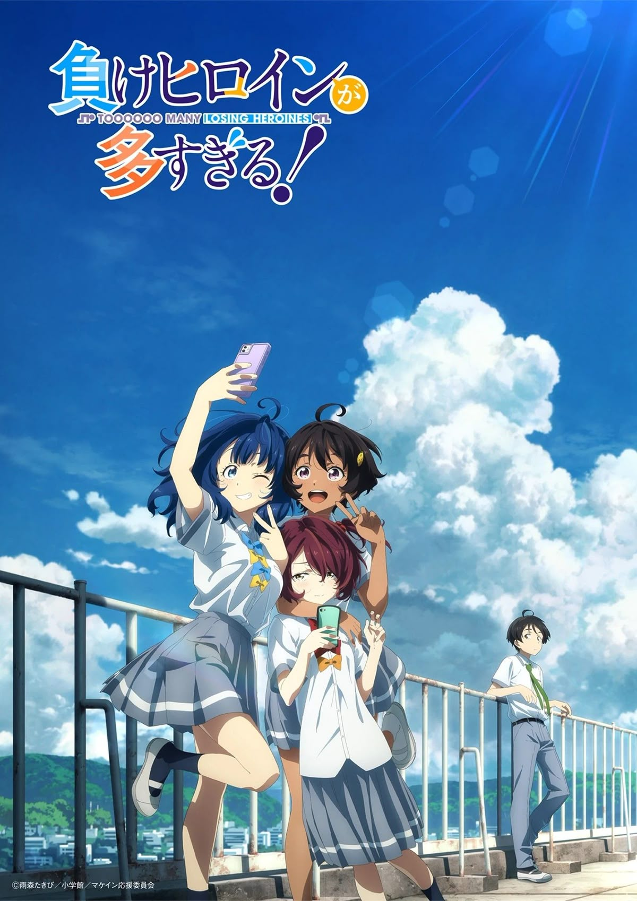

Romance inesperado
Las historias de amor se cuentan desde los bordes de la confesión, con mucha sinceridad y humor. [1]
UNA COMEDIA ROMÁNTICA ESCOLAR
¿Qué pasa con las chicas cuando su historia de amor no sale como esperaban? Makeine sigue sus desamores, amistades y nuevos comienzos con humor y sensibilidad.
Una historia sobre perder en el amor y seguir adelante.
INTRODUCCIÓN

Makeine: Too Many Losing Heroines!, conocida en japonés como Make Heroine ga Oosugiru!, es una comedia romántica escolar creada por Takibi Amamori. La historia gira alrededor de Kazuhiko Nukumizu, un estudiante bastante reservado que prefiere observar la vida de sus compañeros desde la distancia. Nukumizu no aspira a ser el protagonista de una gran aventura romántica, sino que suele considerarse una persona secundaria dentro de su propio entorno. Sin embargo, su vida cambia cuando conoce repetidamente a chicas que han sido rechazadas por sus respectivos intereses amorosos. [1] [2] [3]
A diferencia de otras historias románticas, la serie presta especial atención a los momentos que normalmente quedan fuera de las narraciones tradicionales: la preparación para una confesión, el rechazo, la tristeza posterior y el proceso necesario para continuar con la vida. Por eso, las jóvenes protagonistas reciben el nombre de «heroínas perdedoras», ya que sus historias de amor no siguen el camino esperado. Aunque pierdan frente a otra persona o vean que sus sentimientos no sean correspondidos, no dejan de tener sueños, defectos, aspiraciones y una personalidad propia. [1]
Entre las figuras centrales se encuentran Anna Yanami, Lemon Yakishio y Chika Komari. Anna parece ser una chica extrovertida, alegre y muy popular, aunque muchas veces utiliza su apariencia despreocupada para ocultar lo que realmente siente. Lemon es una deportista llena de energía y determinación que dedica gran parte de su tiempo al atletismo. Por su parte, Chika es más tímida, sensible y reservada; pertenece al club de literatura y tiene dificultades para expresar directamente sus emociones. Las tres representan maneras diferentes de enfrentar la adolescencia, la amistad y el amor. [1] [4]
El protagonismo de Kazuhiko es peculiar, pues no suele actuar como el galán típico de las comedias románticas. Su actitud observadora, prudente y ocasionalmente sarcástica le permite entender lo que ocurre alrededor de él sin imponer su opinión de forma constante. Cuando alguna de las chicas se encuentra en una situación complicada, termina acompañándola y ofreciéndole apoyo. A través de esas conversaciones, la serie muestra que escuchar con atención puede ser tan importante como participar directamente en una relación. [1] [4]
La obra combina escenas cómicas con momentos emocionales bastante realistas. Las situaciones de clase, los clubes escolares, las competencias deportivas y los encuentros cotidianos producen diálogos divertidos y comentarios inesperados. Sin embargo, detrás del humor existe una reflexión sobre el miedo al rechazo, la presión social, la autoestima y la necesidad de aceptar el propio pasado. Las protagonistas aprenden que una decepción amorosa no define su valor ni obliga a renunciar a nuevas oportunidades. [1]
Otro aspecto relevante es que cada heroína conserva su libertad para tomar decisiones. No todas necesitan encontrar una pareja inmediatamente, ni tienen que cambiar su forma de ser para convertirse en una versión perfecta de sí mismas. Algunas buscan recuperar la amistad, otras desean mejorar en sus actividades favoritas y muchas simplemente necesitan tiempo para ordenar sus sentimientos. De esta forma, la serie presenta el crecimiento personal como un proceso continuo que puede comenzar justamente a partir de una pérdida. [1]
La historia parte de una idea sencilla, pero poco habitual: en vez de seguir únicamente a quien consigue formar una pareja, acompaña a quienes quedan fuera de ese desenlace. La expresión «heroína perdedora» describe la posición que una chica ocupa dentro de una historia romántica, no su valor como persona. Al cambiar el punto de vista, la serie transforma el supuesto final de esas historias en el comienzo de nuevas relaciones, decisiones y situaciones escolares. [1]
El contraste entre las protagonistas hace que el tema no se repita de una sola manera. Anna es una amiga de la infancia alegre y muy aficionada a la comida; Lemon representa a la deportista llena de energía; y Chika es una joven tímida que tiene dificultades para desenvolverse socialmente. Estos rasgos sirven como punto de partida para sus personalidades, no como una descripción completa de ellas. Conforme conviven con Kazuhiko y con sus compañeros, se revelan inseguridades, fortalezas y deseos que no siempre son visibles a primera vista. [1] [4]
El escenario escolar también cumple una función importante. El club de literatura, el equipo de atletismo, las aulas y los espacios comunes hacen que los personajes vuelvan a encontrarse incluso después de momentos incómodos. Esos lugares compartidos dan continuidad a la vida diaria: una decepción no detiene las clases, las actividades ni las conversaciones. La comedia nace muchas veces de tener que convivir con otras personas cuando uno todavía está tratando de ordenar sus sentimientos. [1] [4]
Kazuhiko ocupa una posición particular dentro de ese grupo. Al comienzo prefiere pasar inadvertido y observar desde una distancia segura, pero los problemas de los demás lo involucran poco a poco. No es un protagonista que siempre tenga una respuesta perfecta; sus comentarios secos y su manera analítica de mirar las situaciones también producen humor. Su presencia permite que los personajes hablen y se conozcan, aunque cada uno conserva la responsabilidad de tomar sus propias decisiones. [1] [4]
El equilibrio entre comedia y emoción distingue el tono de la serie. Las conversaciones exageradas, los malentendidos y las reacciones inesperadas alivian los momentos tensos, pero no hacen que los sentimientos de los personajes desaparezcan. La risa puede convivir con la vergüenza o la tristeza: una persona puede bromear sobre una situación y seguir necesitando tiempo para aceptarla. Esa mezcla da espacio para tratar el rechazo con ligereza en algunas escenas y con sinceridad en otras. [1] [4]
También hay una diferencia entre perder una oportunidad amorosa y perder toda posibilidad de ser feliz. La serie invita a separar esas ideas: que alguien no corresponda a nuestros sentimientos no borra los vínculos que ya existen ni impide crear otros. Las amistades pueden cambiar, algunas conversaciones pueden ser difíciles y no todos los conflictos se resuelven de inmediato. Aun así, los personajes siguen teniendo aficiones, metas y relaciones que no dependen de conseguir una pareja. [1] [4]
La obra comenzó como una novela ligera japonesa y luego llegó a la animación. En su adaptación al anime, las expresiones, los silencios, la música y el ritmo de las escenas aportan otra manera de percibir los estados de ánimo. Una mirada o una pausa pueden decir tanto como una explicación directa, mientras que los cambios rápidos de tono refuerzan el humor. El resultado conserva la energía de una comedia escolar y, al mismo tiempo, permite detenerse en las reacciones de quienes suelen quedar en segundo plano. [1] [2] [3]
La estructura coral ayuda a que el mundo de la serie parezca más amplio que un solo triángulo amoroso. Cada personaje llega con sus propios vínculos y asuntos pendientes, y esos caminos se cruzan en actividades compartidas. Así, una escena puede empezar como una conversación sobre un desamor y terminar mostrando una amistad, una rivalidad deportiva o una diferencia de carácter. El grupo no elimina los problemas individuales, pero crea ocasiones para que sus integrantes se vean desde perspectivas nuevas. [1] [4]
La adaptación también aprovecha recursos propios de la animación para distinguir esos momentos. El ritmo puede pasar de una reacción visual exagerada a una pausa tranquila; la música y las expresiones acompañan cambios de ánimo sin necesidad de explicarlo todo con diálogo. Esto hace que el humor no dependa únicamente de los chistes: muchas veces surge de cómo los personajes reaccionan, de lo que callan y de la distancia entre lo que intentan aparentar y lo que realmente sienten. [1] [5]
El lugar donde se desarrolla la historia también le da un carácter propio. La ciudad de Toyohashi, en la prefectura de Aichi, es importante para el vínculo de la obra con su entorno: el autor Takibi Amamori ha hablado de su conexión personal con la ciudad y de la emoción de ver a los personajes desenvolverse allí. En la adaptación, los paisajes y espacios reconocibles contribuyen a que las caminatas, los trayectos escolares y las actividades parezcan parte de una vida diaria concreta, en lugar de un escenario genérico. [1] [2] [3]
El título de la obra resume su tono con una paradoja deliberada. «Demasiadas heroínas perdedoras» suena como una etiqueta cómica, pero al mismo tiempo señala a quiénes quiere observar la historia. La palabra “perdedora” se refiere a no conseguir una relación amorosa deseada; no significa que la joven haya fracasado en todo ni que su historia carezca de interés. La serie invita a mirar con curiosidad qué ocurre con sus protagonistas una vez que el romance deja de ser el único horizonte. [1]
Por eso, Makeine puede disfrutarse como una comedia de situaciones y también como una historia de relaciones. Una broma puede revelar que dos personas tienen confianza, mientras que un silencio puede mostrar que todavía no saben cómo hablar de algo doloroso. Los cambios de registro permiten acercarse a los personajes sin convertir cada episodio en un drama, y hacen que el humor dependa tanto de sus personalidades como de los sucesos románticos que las reúnen. [1] [4]
La obra también se apoya en convenciones conocidas del género —el amor de la infancia, los clubes escolares, las confesiones y los malentendidos— para jugar con ellas desde otro punto de vista. El espectador puede reconocer situaciones familiares, pero la narración no las trata únicamente como pasos hacia una pareja. En cambio, pregunta cómo se sienten quienes quedan al margen de ese desenlace y cómo cambia su relación con el resto del grupo cuando la expectativa romántica ya no puede cumplirse de la misma manera. [1]
Para quien se acerca por primera vez, el anime ofrece una entrada accesible a esa idea: presenta rápidamente a sus personajes y combina los conflictos con escenas cotidianas. Quienes quieran conocer más detalles de la historia pueden continuar con las novelas ligeras, que desarrollan el mundo y las relaciones en otro formato. La adaptación y los libros se complementan, aunque cada uno organiza la narración con sus propios recursos y no es necesario conocer ambos para seguir la premisa central. [1] [2] [3]
En conjunto, la serie propone mirar con paciencia a personas que podrían quedar reducidas a un estereotipo. Una estudiante popular también puede sentirse insegura; una atleta enérgica puede tener dudas; una persona reservada puede crear lazos importantes sin transformarse en alguien completamente distinto. Esa atención a las contradicciones hace que el reparto resulte más cercano y mantiene abierta la historia después de cada situación romántica. [1]
Finalmente, Makeine ofrece una mirada cálida y entretenida sobre las relaciones juveniles. Su interés no está en afirmar que perder sea bueno ni en exigir que todo dolor se convierta enseguida en una lección. Más bien, muestra que una historia personal continúa después de una decepción: con momentos incómodos, amistades, actividades cotidianas y oportunidades para conocerse mejor. Por medio de personajes distintos y conflictos escolares, el anime invita a mirar con respeto a quienes no ocupan el lugar tradicional de la pareja perfecta. [1] [5]
Las historias de amor se cuentan desde los bordes de la confesión, con mucha sinceridad y humor. [1]
Las protagonistas transforman una decepción en una oportunidad para conocerse mejor. [1]
Clubes, conversaciones absurdas y situaciones cotidianas crean un ambiente ligero y memorable. [1]
TEMAS PARA REFLEXIONAR
01 · AUTOESTIMA Y CAMBIO
Una reflexión sobre aceptar la decepción, cuidar la autoestima y encontrar un camino propio después del rechazo. [1]
Leer el tema →02 · VÍNCULOS Y EMPATÍA
Cómo escuchar, respetar los límites y estar presente puede ayudar a que nadie tenga que enfrentar solo un momento difícil. [1]
Leer el tema →03 · ORIGEN Y ADAPTACIÓN
Conoce el recorrido de la novela ligera y cómo su historia llegó a la pantalla. [1] [2] [3]
Conocer su historia →MIRA Y ESCUCHA
Reproduce el tráiler y escucha el opening usando los archivos incluidos con esta página. [1] [6] [11]
TRÁILER
OPENING